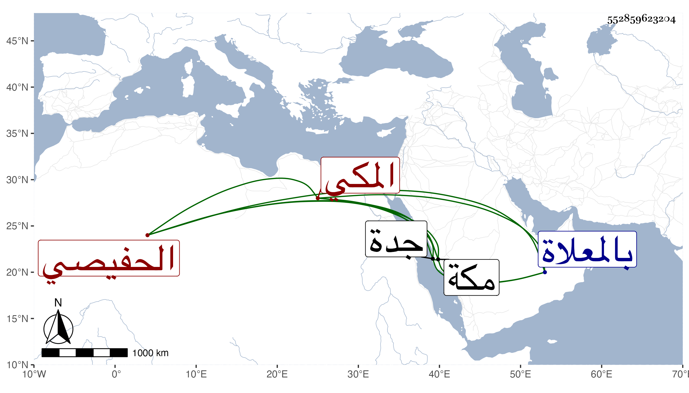

0902Sakhawi.DawLamic.ITO20230111-ara1.EIS1600.552859623204
Biography ID: 552859623204
836
راجح بن شميلة بن محمد بن سالم الحفيصي المكي الآتي أبوه والماضي أخوه حرشان . مباشر جدة وابن مباشرها بل ارتقى للوزر وتكلف لمخدومه وعساكره الكثير جدا . مات بها في ربيع الأول سنة سبع وثمانين وجيء به لمكة فغسل وصلى عليه عند باب الكعبة ودفن بالمعلاة غير مأسوف عليه .
